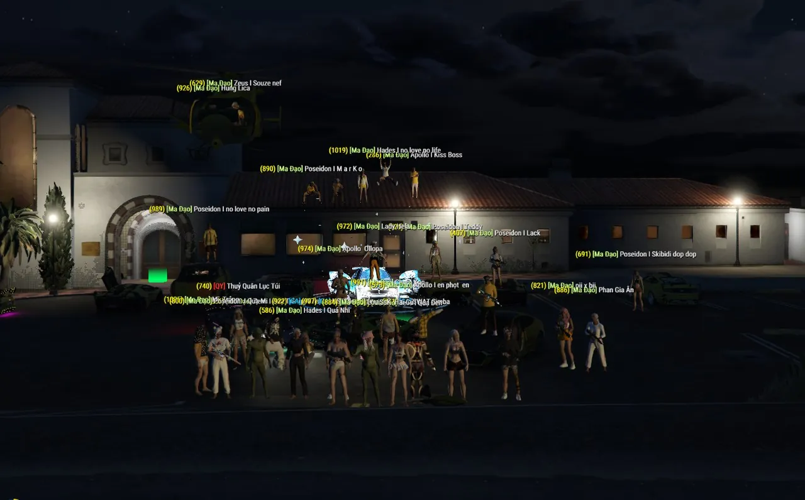

Khi Ma Đạo Community tăng từ vài trăm lên hơn 3.000 thành viên, việc nhận tin nhắn riêng lẻ để hỗ trợ hoặc xử lý đơn hàng ở Ma Đạo Store bắt đầu quá tải và dễ trôi yêu cầu. Đây là lý do mình xây dựng hệ thống Ticket bằng Node.js và thư viện discord.js v14 để tự động hóa quy trình tiếp nhận.
1. Bài toán thực tế đặt ra
Lúc mới mở server, thành viên cần mua vật phẩm hoặc báo lỗi thường nhắn tin trực tiếp cho quản trị viên. Cách làm đó gặp ba vấn đề lớn: thông tin bị phân tán, các cộng tác viên hỗ trợ không nắm được trạng thái xử lý của nhau và khó tra lại lịch sử đối chiếu khi cần.
Mục tiêu của Ma Đạo Ticket Bot là giải quyết gọn luồng tiếp nhận đó ngay trong Discord:
- Thành viên chỉ cần bấm nút tạo yêu cầu theo đúng phân loại (Mua hàng hoặc Hỗ trợ - Bảo hành).
- Bot tự mở một kênh riêng tư chỉ gồm người gửi và đội ngũ có quyền
roleSupport. - Nhân sự có thể khóa, mở lại hoặc đóng và đưa kênh về mục lưu trữ thay vì xóa mất dữ liệu.

2. Thiết lập môi trường & bảo mật Token
Dự án dùng Node.js bản LTS cùng hai gói cơ bản là discord.js và dotenv. Điểm quan trọng nhất khi khởi tạo trên Discord Developer Portal là bật đúng Gateway Intents phù hợp (Guilds, GuildMessages, MessageContent) và tách toàn bộ Token ra file .env kèm khai báo trong .gitignore để tránh rò rỉ khóa truy cập lên GitHub.
npm init -y
npm install discord.js dotenvKhung khởi tạo client tối giản để kiểm tra kết nối trước khi gắn các handler nghiệp vụ:
require('dotenv').config();
const { Client, GatewayIntentBits, Events } = require('discord.js');
const client = new Client({
intents: [
GatewayIntentBits.Guilds,
GatewayIntentBits.GuildMessages,
GatewayIntentBits.MessageContent
]
});
client.once(Events.ClientReady, (readyClient) => {
console.log(`Bot da san sang voi tai khoan ${readyClient.user.tag}`);
});
client.login(process.env.TOKEN);3. Tổ chức mã nguồn cho Ma Đạo Ticket Bot
Thay vì viết toàn bộ logic bắt sự kiện vào một file index.js dài hàng trăm dòng, mã nguồn dự án được tách thành các thành phần theo trách nhiệm để dễ thêm loại ticket mới về sau:
MaDao-Ticket-NodeJS/
├── handlers/ # Nạp và điều phối commands, interactions
├── config.js # Khai báo roleSupport, category lưu trữ
├── index.js # Điểm vào chính của ứng dụng
└── package.jsonKhi gửi bảng hướng dẫn vào kênh hỗ trợ chính, sử dụng Embed kết hợp thành phần ActionRowBuilder và ButtonBuilder giúp người dùng thao tác chỉ với một cú nhấp thay vì phải nhớ cú pháp lệnh phức tạp:
const ticketEmbed = {
color: 0x0284c7,
title: 'Hệ Thống Ticket — Ma Đạo Store',
description: 'Vui lòng chọn đúng phân loại bên dưới để bộ phận phụ trách tiếp nhận nhanh hơn.',
fields: [
{
name: 'Mua hàng',
value: 'Tư vấn gói sản phẩm và xác nhận đơn từ cửa hàng',
inline: true
},
{
name: 'Hỗ trợ - Bảo hành',
value: 'Kiểm tra lỗi, bảo hành và giải đáp thắc mắc kỹ thuật',
inline: true
}
],
footer: { text: 'Hệ thống tự động tạo kênh riêng tư khi tiếp nhận' },
timestamp: new Date()
};4. Lựa chọn lưu trữ dữ liệu theo quy mô
Giai đoạn đầu khi số ticket mở đồng thời chưa lớn, trạng thái kênh có thể gắn trực tiếp thông qua tên kênh hoặc topic ID trên Discord để giảm chi phí bảo trì. Khi cộng đồng vượt mốc 1.000+ thành viên và cần lưu điểm thưởng, cấu hình riêng cho từng kênh hoặc nhật ký dài hạn, việc chuyển sang cơ sở dữ liệu là bắt buộc.
MongoDB (phù hợp với bot cộng đồng cỡ nhỏ và vừa)
- Cấu trúc document gần với đối tượng JSON của JavaScript, dễ triển khai nhanh với Mongoose.
- Thuận tiện khi cần bổ sung thêm thuộc tính người dùng mà không phải sửa bảng phức tạp.
- Hạn chế: cần kiểm soát kỹ việc chuẩn hóa dữ liệu nếu bắt đầu có nhiều liên kết chéo.
SQL — PostgreSQL / MySQL (phù hợp khi hệ thống mở rộng nghiệp vụ)
- Đảm bảo tính toàn vẹn dữ liệu và transaction an toàn cho hệ thống thanh toán hoặc lịch sử giao dịch phức tạp.
- Truy vấn báo cáo thống kê rõ ràng, đổi lại thời gian thiết kế schema ban đầu kỹ hơn.
5. Vận hành 24/7 và những điểm cần để ý
Trong thời gian duy trì MaDao-Ticket-NodeJS, có ba kinh nghiệm thực tế giúp bot hạn chế sập bất ngờ:
- Kiểm tra quyền trước khi tạo kênh: Luôn kiểm tra bot có quyền
ManageChannelsở category đích trước khi gọi API để trả về thông báo rõ thay vì văng lỗi chưa bắt. - Bắt lỗi toàn cục ở Interaction: Với tương tác nút bấm trên Discord, người dùng sẽ thấy trạng thái "Interaction failed" nếu bot không phản hồi trong 3 giây đầu; nên dùng
deferReply({ ephemeral: true })nếu cần xử lý nhiều bước. - Tách môi trường chạy thật và môi trường thử nghiệm: Luôn chạy thử trên server test riêng bằng token phụ trước khi đẩy bản mới lên máy chủ đang hoạt động (Railway hoặc VPS với PM2).
Lời kết
Làm Discord Bot không chỉ giúp giải quyết vấn đề quản trị thực tế cho cộng đồng của mình mà còn là bài tập rất tốt để nắm vững lập trình hướng sự kiện, bất đồng bộ trong Node.js và cách đọc tài liệu API chuẩn chỉnh.
— Nguyễn Thành Luân, ghi chú từ dự án MaDao-Ticket-NodeJS